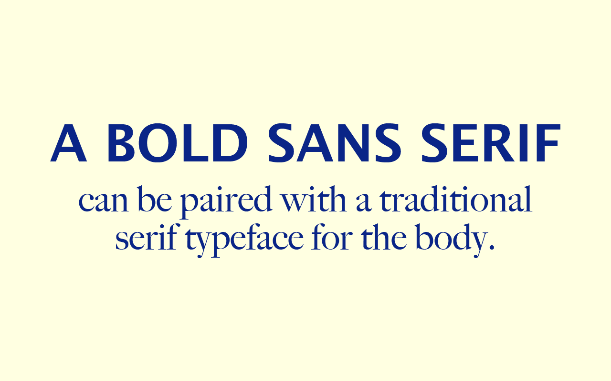

By Juan Salas
One of these ways to choose fonts is to choose a pair of opposites. A good example of this is to use a big and bold serif for your headline and a nice traditional serif typeface for the body copy. Take a look at this example, to see this tip in action.

Now that you have a main font for your design, the best way to choose a good secondary font is to make sure it’s dramatically different yet complements the design.
You wouldn’t want to choose two serifs that look similar, there is no contrast and in fact, it looks like a design mistake.
Take a look at this example, these are two different serif typefaces but it’s difficult to tell.
Learn MoreColor choice helps determine whether the content on a page is readable. Legibility is optimized with an appropriate level of color contrast between the text and the background. Too little contrast makes the text hard to read; too much contrast is hard on the eyes. A classic example of color contrast is black text on a white background. If you look closely, you'll notice that many websites actually use dark grey text on a white or off-white background in order to maximize legibility while minimizing eye strain.
Emphasis is the part of a design that catches the eye of the user—a focal point, in other words. Ideally, this should be the most important part of the design, whether that’s the headline, an image, or a CTA. But that doesn’t always happen.
Inexperienced designers may inadvertently emphasize the wrong parts of the page, creating confusion on the part of the user.
Be sure to emphasize the parts you want your users to look at first. You can do this through things like scale, white space, color, shadow, pattern, or other techniques.
Learn More